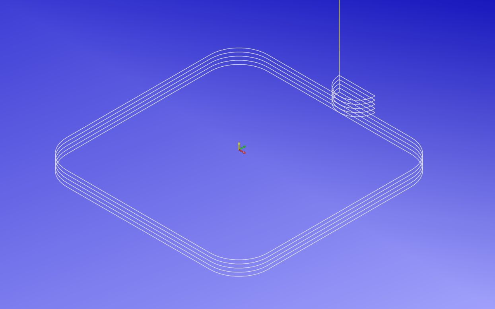
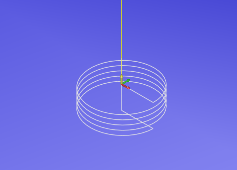
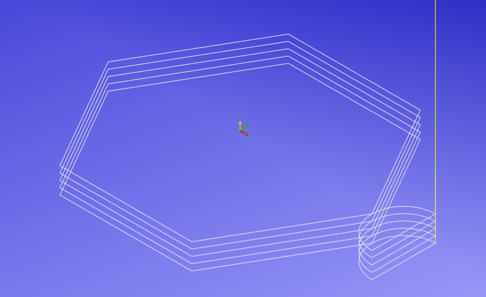
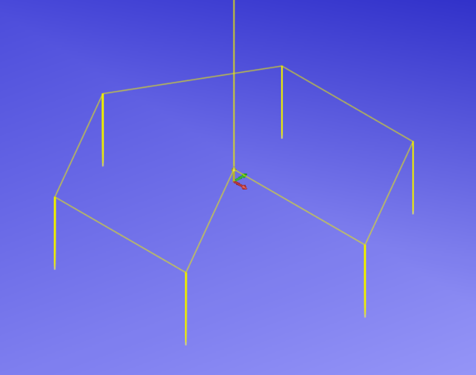

Python Based G-Code Creator
I have begun to learn Python and have started developing a simple G-Code creator for CNC machining.
These are based on simple G-Code programs that I have typed out many many times over the years, hopefully I can buld this into something that will help others who are starting out learning CNC.
Currently, I have implemented three basic shapes: rectangles, interpolated circles, and hexagons. Each shape has its own section where you can input the necessary parameters such as dimensions and tool information. The generated G-Code can be copied to the clipboard for easy use in CNC machines.
The Rectangle I feel is fairly self explanatory, and produces a program very similar to the built-in software of an XYZ milling machine.
The Interpolation program, is something that I have used for many years on Haas machines. It is good for milling holes of multiple sizes with one size tool. It is also the same code I use for thread milling. Just substitute the cut size for the thread pitch, hole size is the thread OD.
I added a hexagon generator, because this is something I have occasionally needed, and it's not always been easily accessible in my brain. At some point I'll add other regular polygons and bolt hole positioning.
I plan to add more shapes and features as time goes on. Also as I learn more Python I'll add any other projects I come up with.
It's also possible that I will be creating an Android app to host these codes.
Rectangle G-code Generator

Enter your parameters below to generate G-code for a simple rectangle.
Generated G-code:
Rectangle G-code Generator (G41 Offset)
This code is similar to the Rectangle code above, but uses G41 to offset the tool according to the tool table.
This program will create G-code for a simple rectangle, utilising G41 to offset the tool, based on the parameters you input. Please follow the prompts to input the necessary parameters.
Generated G-code:
Interpolation G-code Generator

Enter your parameters below to generate G-code for hole interpolation or thread milling.
Generated G-code:
Hexagon G-code Generator

Enter your parameters below to generate G-code for milling a hexagonal profile.
Generated G-code:
Bolt Hole on PCD G-code Generator

This program will create G-code for peck drilling a series of bolt holes based on the parameters you input. Please follow the prompts to input the necessary parameters.
Generated G-code: